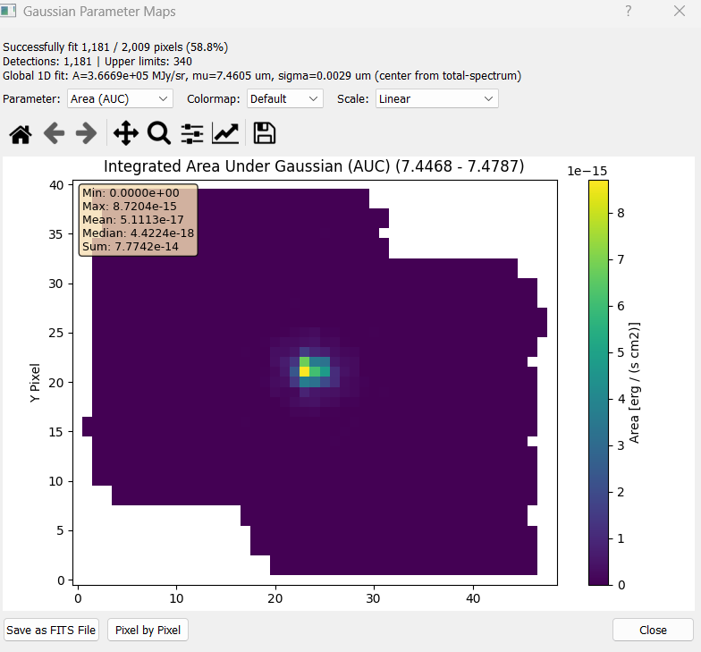
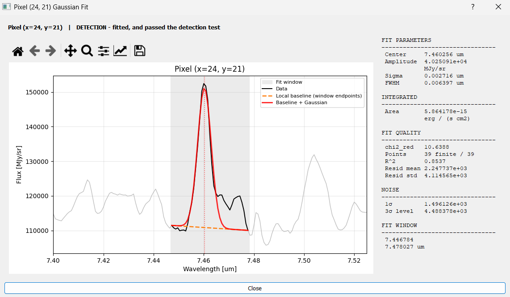

Pixel-by-Pixel Cube Fitting
Fit a Gaussian to the spectrum of every spatial pixel in the cube, producing 2D parameter maps that show how the line properties vary across the field.
This is the full-cube counterpart to 1D Spectrum Fitting. The per-pixel fit is the same algorithm, but the workflow, the required inputs and the outputs are different: a noise region becomes mandatory, non-detections are turned into upper limits rather than discarded, and the result is a set of maps rather than a single number per parameter.
Note
Running 1D Spectrum Fitting first is not mandatory for a Gaussian map, but recommended.
Setting Up the Fit
The cube fit reuses the same toggle buttons as the 1D fit. Set Left and Right to bracket the line – this becomes the fit window for every pixel.
Peak is not used. The cube fit derives its own center guess by fitting the summed spectrum of the whole cube once, or from the nearest HITRAN catalog line in the window if a line list is loaded. Your Peak click has no effect here.
Noise region is mandatory. Set Noise L and Noise R over a line-free stretch of spectrum – the fit will not start without them. The noise measured there sets the detection threshold and the size of any upper limits.
Note
“Detections” is not a strict 3σ cut. A pixel can also be flagged as a detection with a weaker signal (down to about 0.5σ) as long as the fit converges — this is deliberate, meant to catch faint-but-real lines a strict cut would drop, at the cost of also letting some noise through. Treat the mask as “a Gaussian was fitted here”, not as a significance cut, and apply your own SNR threshold before using an area map for science.
Running the Fit
Click Fit Gaussian Map and confirm the prompt. A progress bar tracks completion, and Cancel stops the run.
Cost. A bit expensive compared to the other fitting tools, but still manageable – typically minutes, scaling with pixel count and window width.
Results are cached. Re-running with the same Left/Right and the same Noise L/Noise R reuses the previous fit instead of recomputing it, and tells you so. Change any of the four boundaries to force a fresh run.
Reading the Results
The results window opens automatically when the fit completes, headed by a summary:
Successfully fit N / M pixels — how many converged, e.g. from a real MIRI run:
Successfully fit 1,181 / 2,009 pixels (58.8%)Detections | Upper limits — how many pixels landed in each category (see the detection note), e.g.
Detections: 1,181 | Upper limits: 340Global 1D fit — the summed-spectrum fit used to seed the per-pixel initial guesses, and where its center came from, e.g.
Global 1D fit: A=3.6669e+05 MJy/sr, mu=7.4605 um, sigma=0.0029 um (center from total-spectrum)
center from total-spectrummeans the seed came from fitting the summed cube. With a HITRAN list loaded it can instead come from the nearest catalog line in the window.Astays in the cube’s native flux unit (not CGS-converted) – unlike the Amplitude map below, this is just the initial guess used to seed every pixel’s fit.
Below that, a dropdown selects which map to display, with colormap and scale controls (Linear, Log, or Percentile 2–98%):


The results window for a real MIRI run: the summary text above the dropdown, and the Area (AUC) map selected – the colorbar confirms the CGS conversion (in erg/s/cm² units), and the overlay box gives Min/Max/Mean/Median/Sum for the whole displayed map.
Output Maps
Available in the dropdown:
Map |
Contents |
|---|---|
Area (AUC) |
Integrated line flux per pixel, |
Amplitude |
Peak height above the baseline, in the cube’s native flux unit (e.g. MJy/sr) – unlike Area, this is not CGS-converted |
Center |
Fitted line center wavelength — this is your velocity map, once converted |
Sigma |
Gaussian σ, in the spectral axis unit |
FWHM |
|
chi2 (fit quality) |
Reduced χ², computed against the measured noise. Informational only — it does not affect which pixels count as detections. |
Success Mask |
Binary map of converged pixels |
Residuals |
Data minus fitted model. Display only — see the export note below. |
Where every pixel goes
Each pixel lands in exactly one of three states, and they account for the whole map. From the MIRI run above:
State |
Example |
What is stored |
|---|---|---|
Detection |
1,181 (58.8%) |
Converged and passed the detection test — which is not a 3σ cut, see the detection caveat. Every parameter populated. |
Upper limit |
340 (16.9%) |
|
No data |
488 (24.3%) |
The spectrum was entirely NaN — outside the field of view. Everything is NaN and no flag is set, so these pixels appear in neither mask. |
1,181 + 340 + 488 = 2,009. If your three numbers do not add up to the pixel count, something is wrong with the window or the cube.
Note
The exact counts are not reproducible to the pixel — identical runs can differ by a
few pixels due to floating-point non-determinism inside curve_fit.
Upper limits
For pixels that fail the detection threshold the area is not set to NaN. It is replaced
with an upper limit at the detection threshold, and the pixel is flagged in the
is_upper_limit mask.
Warning
is_upper_limit is set by several paths, not only “amplitude below threshold”: a
window with fewer than 5 finite samples, a failed noise estimate, and an exception inside
the fit all land here too. In the last case, if the failure happened before an initial σ
guess existed, area is NaN while is_upper_limit is True.
Inspecting Individual Pixels
With Pixel Select on (the default), clicking a pixel on the map opens that pixel’s own fit – the same control as CO Flux Extraction’s pixel inspector, but for a single Gaussian instead of a multi-line CO fit. Turn Pixel Select off to zoom/pan the map freely instead of reopening this dialog on every click.


The stored fit for one pixel: data, the local endpoint-to-endpoint baseline, and the fitted Gaussian, with every parameter the map holds for that pixel listed alongside – this is exactly what the map contains, not a fresh re-fit.
Note
The dialog never re-fits anything – it only redraws what fit_gaussians_per_pixel
already stored for that pixel, so what you see here always matches the map.
Exporting Maps as FITS
With a map selected in the dropdown, click Save as FITS File. Each map is written as a single-slice FITS file you can reopen in the 2D viewer (2D FITS Dual Image Viewer) or in external tools.
The header of each exported map carries the fit’s provenance: LAMMIN/LAMMAX for the
window, NSUCC/NTOTAL for the detection count, PARAM for which map it is, and
BUNIT set to the same unit shown on the colorbar.
Note
Residuals export as a 3D cube, not a 2D map. Selecting Residuals and clicking
Save as FITS File writes the full normalized residual cube — shape
(n_wave, n_y, n_x) over the fit window, with BUNIT = 'Normalized residuals' —
even though the dialog only ever displays the middle wavelength slice. The API
equivalent is export_residual_cube (below).
Using the API
Fitting the cube
from cube_explorer.api import load_cube, create_gaussian_map
cube = load_cube("data.fits")
maps = create_gaussian_map(
cube,
lam_min=7.446784, # Left boundary
lam_max=7.478707, # Right boundary
noise_min=7.516742, # Line-free region, as in the GUI
noise_max=7.562928,
fac_above_stdres=3.0, # Detection threshold in sigma
n_jobs=8,
)
print(f"Detections: {maps['is_detection'].sum()}")
print(f"Upper limits: {maps['is_upper_limit'].sum()}")
print(f"No data: {maps['area'].size - maps['is_detection'].sum() - maps['is_upper_limit'].sum()}")
area_map = maps['area'] # 2D array, shape (n_y, n_x)
Returned keys
maps['amplitude'] # Peak amplitude, in the cube's native flux unit (e.g. MJy/sr)
maps['center'] # Line center wavelength
maps['sigma'] # Gaussian sigma
maps['fwhm'] # 2.355 * sigma
maps['area'] # Integrated flux, or an upper limit - check is_upper_limit
maps['success'] # Boolean: did the pixel converge and pass the detection test?
maps['is_upper_limit'] # Boolean: area is an upper limit (may still be NaN)
maps['residuals_cube'] # 3D residuals cached during fitting
maps['fac_above_stdres'] # The threshold that was used
maps['wavelength_unit'] # Spectral axis unit string
maps['global_fit'] # The summed-spectrum fit used for initial guesses (also
# native-unit amplitude)
Note
amplitude and area are not converted the same way. amplitude stays in
the cube’s native flux unit; only area is CGS-converted (to erg/s/cm², when the
header has the pixel scale needed for the conversion).
Exporting a residual cube
Fits and subtracts a Gaussian at every pixel, writing the normalized residuals to a 3D FITS file:
from cube_explorer.api import load_cube, export_residual_cube
cube = load_cube("data.fits")
export_residual_cube(
cube,
out_path="residual.fits",
lam_min=7.492291,
lam_max=7.517421,
)
# Or keep the array in memory as well
path, residuals = export_residual_cube(
cube, out_path="residual.fits",
lam_min=7.492291, lam_max=7.517421, return_cube=True,
)
Constraints and Tips
Left < Right, and the noise region must be set — the run will not start otherwise
Keep the noise region close in wavelength to the fit window. Detector noise varies with wavelength, so a distant noise estimate misstates the detection threshold across the whole map
Keep the fit window tight. Every extra wavelength sample is fitted for every pixel, so a window twice as wide costs roughly twice the runtime and degrades χ²_red
Always check the Success Mask and the detection/upper-limit counts before interpreting a parameter map
Use the χ² map to find where the model breaks down
Next Steps
Rotational Diagram — turn per-pixel line fluxes into temperatures, handling the upper limits correctly
CO Flux Extraction — simultaneous multi-line fitting for CO rovibrational bands
Exporting Data — other export paths
2D FITS Dual Image Viewer — open the exported parameter maps with WCS support